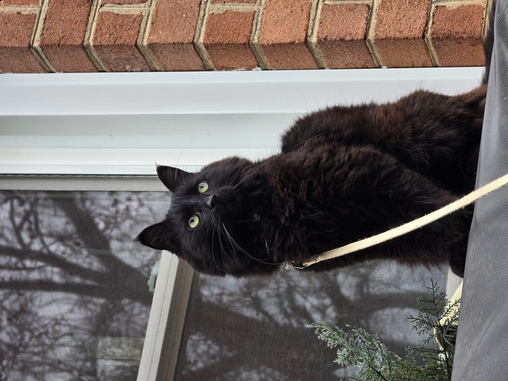

Center for Applied MeowScience

Pete the Cat
Principal Investigator, Human Compliance Lab
Center for Applied MeowScience
Meowvard University
Phi-meowsopher Pete the Cat studies human-feline interaction systems, with a
particular focus on vocalization dynamics, servant compliance modeling, and
strategic resource acquisition. His work integrates agent-based modeling,
behavioral systems analysis, and computational approaches to domestic
human management.
Research Interests
- Human compliance studies
- Computational meow optimization
- Treat acquisition systems
- Agent-based behavioral modeling
- Domestic resource allocation dynamics
Education
Ph.D. in Multi-Agent Behavioral Systems
Meowvard University
M.Phil. in Human Compliance Analytics
University of Oxfordshire Tabby College
B.S. in Computational Interaction Science
California Institute of Meowchnology
Selected Publications
Scream Now or Scream Later?
An Agent-Based Model of Morning Vocalizations and Human Compliance (2026)
Download Full Manuscript
Statistical Modeling of Sudden Sprint Events Following Bathroom Usage
Annals of Feline Locomotion Research (2024)
Longitudinal Outcomes of Ignoring the Cat
Behavioral Review of Human Compliance Studies (2024)
Optimization of Object Displacement from Elevated Surfaces
Journal of Experimental Gravity Testing (2023)
Current Projects
- Cross-species breakfast prediction systems
- Nonlinear human wake-threshold modeling
- Adaptive vocal escalation strategies in multi-human households
Contact
Email: pete.cat@meowvard.edu
Office: Room 314, Behavioral Modeling Center
Office Hours: By appointment only